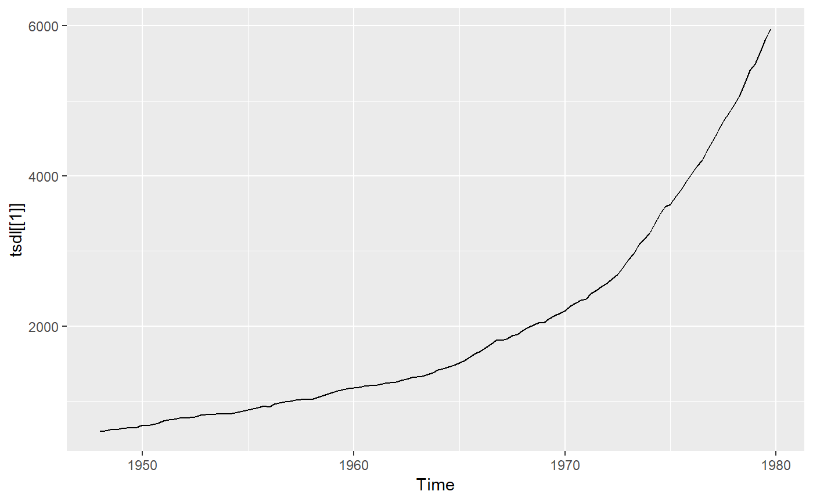

The Time Series Data Library (TSDL) was created by Rob Hyndman, Professor of Statistics at Monash University, Australia.
Installation
You can install the development version from Github
Usage
library(tsdl)
library(forecast)
tsdl
#> Time Series Data Library: 648 time series
#>
#> Frequency
#> Subject 0.1 0.25 1 4 5 6 12 13 52 365 Total
#> Agriculture 0 0 37 0 0 0 3 0 0 0 40
#> Chemistry 0 0 8 0 0 0 0 0 0 0 8
#> Computing 0 0 6 0 0 0 0 0 0 0 6
#> Crime 0 0 1 0 0 0 2 1 0 0 4
#> Demography 1 0 9 2 0 0 3 0 0 2 17
#> Ecology 0 0 23 0 0 0 0 0 0 0 23
#> Finan+H77ce 0 0 1 0 0 0 0 0 0 0 1
#> Finance 0 0 22 5 0 0 20 0 2 1 50
#> Health 0 0 8 0 0 0 6 0 1 0 15
#> Hydrology 0 0 42 0 0 0 78 1 0 6 127
#> Industry 0 0 9 0 0 0 2 0 1 0 12
#> Labour market 0 0 3 4 0 0 17 0 0 0 24
#> Macro-Economic 0 0 18 33 0 0 5 0 0 0 56
#> Meteorology 0 0 18 0 0 0 16 0 0 12 46
#> Micro-Economic 0 0 27 1 0 0 7 0 1 0 36
#> Miscellaneous 0 0 4 0 1 1 3 0 1 0 10
#> Mwhdata 0 1 0 0 0 0 1 0 0 0 2
#> Physics 0 0 12 0 0 0 4 0 0 0 16
#> Production 0 0 4 14 0 0 28 1 1 0 48
#> Sales 0 0 10 3 0 0 24 0 9 0 46
#> Sport 0 0 1 0 0 0 0 0 0 0 1
#> Transport and tourism 0 0 1 1 0 0 12 0 0 0 14
#> Tree-rings 0 0 34 0 0 0 1 0 0 0 35
#> Utilities 0 0 2 1 0 0 8 0 0 0 11
#> Total 1 1 300 64 1 1 240 3 16 21 648
autoplot(tsdl[[1]])
Sources
Rob Hyndman and Yangzhuoran Yang (2018). tsdl: Time Series Data Library. v0.1.0. https://pkg.yangzhuoranyang.com/tsdl/